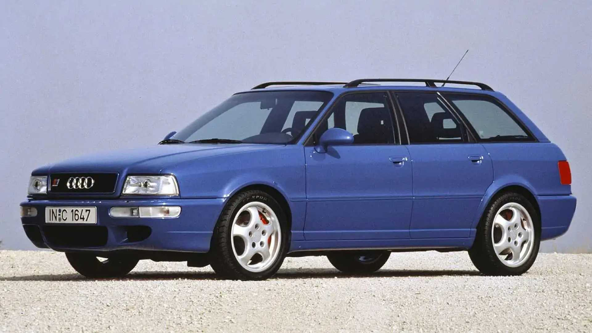

EUROPA / AUDI / 1994
Audi RS2 Avant

La historia del modelo
La ficha está en preparación. Aquí podrás contar su historia, añadir datos y reunir más fotografías.
EUROPA / AUDI / 1994

La ficha está en preparación. Aquí podrás contar su historia, añadir datos y reunir más fotografías.